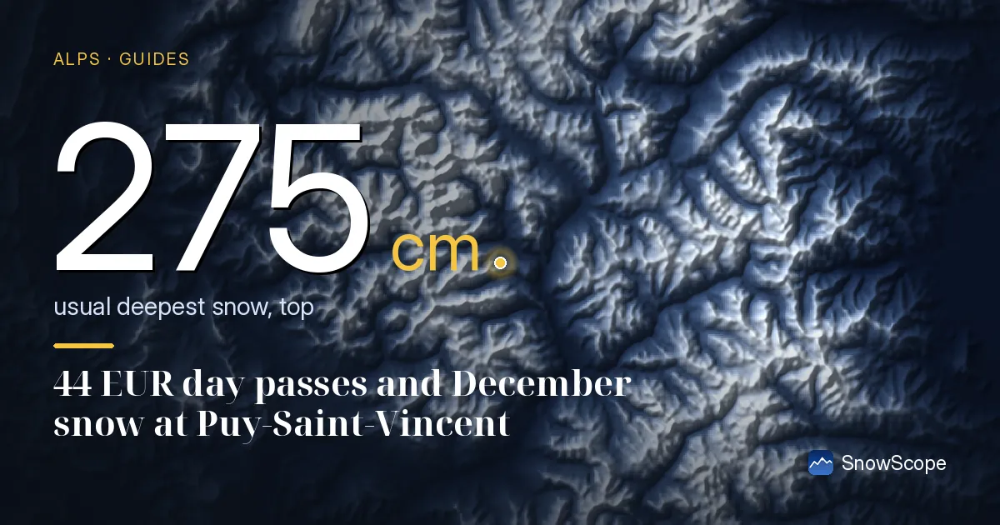

باجي ديال نهار بـ 44 EUR وتلج دجنبر فـ Puy-Saint-Vincent
بـ 44 EUR لباجي ديال نهار واحد للبالغين، كتعتبر Puy-Saint-Vincent مدخل رخيص باش تسكي فـدجنبر فـ Écrins. واخا العلو ديال التلج فـالقاع بـ 1411 م كيكون خفيف فالبدية ديال الشتا، التاريخ ديال التلج ديالنا كيبين بلي كاين تغطية مزيانة من نص الجبل الفوق. ها كيفاش كتقارن مع Serre Chevalier.
شوف توقعات التلج مباشرة ديال Puy-Saint-Vincent فالتطبيق ديال SnowScopeالعلو ديال التلج، التنبيهات والخريطة 3D، فابور.
باجي بـ 44 EUR فجبل صغير
بالنسبة لشتا 2026-27، الموقع الرسمي ديال Puy-Saint-Vincent حط الثمن ديال باجي نهار واحد للبالغين بـ 44 EUR. هادشي كيشمل منطقة ديال التزحلق فيها 42 كم ديال البيست و 12 ليص، كيبداو من 1411 م حتى لـ 2664 م، بفرق ديال العلو كيوصل لـ 1253 م.
خريطة صغيرة كتخلي السفر القصير ديال دجنبر ساهل ورخيص. السؤال الحقيقي هو شحال كيبقى التلج الطبيعي ثابت في كل علو قبل يناير.

تلاتة دالعلويات، تلاتة ديال القصص على تلج دجنبر
فالتحت ديال اليصات (1411 م)، التلج فدجنبر رقيق بزاف. فالتاريخ ديال التلج ديالنا ديال 46 شتوة اللي فاتو (1980-81 حتى 2025-26)، العلو المعتاد فدجنبر هو 19 سم، وكيهبط تحت 5 سم فواحد الشتوة من أصل 10، وكيفوت 39 سم فواحد الشتوة من أصل 10.
الفوق، التغطية كاتبنى دغيا. نص الجبل (2037 م) فيه معدل ديال 55 سم فدجنبر عادي، مع شتوة وحدة من أصل 10 تحت 21 سم وشتوة وحدة من أصل 10 فوق 96 سم. فالفوق كاع (2664 م)، دجنبر العادي كيصل لـ 106 سم (44 سم رقيق، 185 سم غليظ).
أيا من سيمانات دجنبر اللي كتشد التلج
الأرقام بالسيمانة كتورينا وقتاش نحجزو. فالتشامبي (1411 م)، 30 سم ولا كتر كتكون فـ 15 % من الشتوات اللي فاتو ما بين 1 و 7 دجنبر، 20 % فـ 8-14 دجنبر، 28 % فـ 15-21 دجنبر، و 33 % فـ 22-28 دجنبر، فقتلي 50 سم ولا كتر كتطلع غير فـ 0 %، 2 %، 7 %، و 9 %.
فـنص الجبل (2037 م)، 30 سم ولا كتر كاتبقى فـ 61 % من الشتوات اللي فاتو ما بين 1 و 7 دجنبر، وكاتطلع لـ 76 %، 89 %، و 93 % فالسيمانات التلاتة الجايين، فقتلي 50 سم ولا كتر كاتبدا من 35 % و 46 % حتى لـ 54 % فـ 15-21 دجنبر و 70 % فـ 22-28 دجنبر. فالفوق (2664 م)، 30 سم ولا كتر كتوصل لـ 98 % فـ 1-7 دجنبر و 100 % من بعد، و 50 سم ولا كتر كتكون فـ 74 %، 85 %، 93 %، و 96 %.
ضد الجار الكبير Serre Chevalier
Serre Chevalier كبيرة بزاف، فيها 157 كم ديال البيست و 70 ليص من 1219 م لـ 2765 م (علو بـ 1546 م). الموقع الرسمي ديالها حاط باجي 6 أيام للبالغين بـ 276.00 EUR من النهار الأول حتل 18 دجنبر 2026 و 345.00 EUR من 19 دجنبر 2026 حتى لـ 1 يناير 2027. Puy-Saint-Vincent فيها غير باجي نهار واحد بـ 44 EUR هنا، مواتية للرحلات القصيرة.
فالتاريخ ديال التلج ديالنا، Serre Chevalier غليظة فالتشامبي (1219 م)، بمعدل 30 سم فدجنبر العادي (8 سم رقيق، 59 سم غليظ) مع 30 سم ولا كتر فـ 30 %، 41 %، 52 %، و 67 % من الشتوات. الفوق، الجوج قريبة لبعضياتهم: Serre Chevalier فيها معدل 58 سم فنص الجبل (1992 م؛ 24 سم رقيق، 103 سم غليظ) و 111 سم فالفوق (2765 م؛ 50 سم رقيق، 192 سم غليظ)، وكتوصل لـ 30 سم ولا كتر فـ 65 %، 83 %، 93 %، و 96 % من الشتوات فنص الجبل و 50 سم ولا كتر فـ 78 %، 87 %، 96 %، و 96 % فالفوق.
التلج اللول، الاتجاهات الطويلة، الإشارات اللولة
الشتوة اللي فاتت (2025-26) كان فيها معدل متواضع فدجنبر فـ Puy-Saint-Vincent: 12 سم فالتشامبي، 42 سم فنص الجبل، و 91 سم فالفوق. التلج اللول العادي كيوصل فـ 30 أكتوبر فالتشامبي، 26 أكتوبر فنص الجبل، و 13 أكتوبر فالفوق. مقارنة الـ 15 شتوة اللولة (1980-81 حتل 1994-95) مع الـ 15 اللخرين (2011-12 حتل 2025-26)، المعدلات ديال دجنبر طالعين من 13 سم لـ 23 سم فالتشامبي، من 42 سم لـ 60 سم فنص الجبل، ومن 87 سم لـ 114 سم فالفوق. الحالات القصوى الرقيقة وصلت لـ 0 سم فالتشامبي فـ 1998-99 (13 سم فنص الجبل، 38 سم فالفوق فـ 2015-16)، فقتلي 1996-97 وصلت لـ 52 سم، 114 سم، و 199 سم.
كعلامة على كيفاش كيبدا هاد الموسم، التقدير ديال التلج اليوم فـ 13 نونبر 2026 واقف فـ 0 سم فالتشامبي ونص الجبل و 11 سم فالفوق، مع تقدير ديال 0 سم، 37 سم، و 70 سم ديال تلج جديد فهاد السيمانات السبع الجايين. بالنسبة لـ 13 حتل 26 نونبر 2026، التوقعات ديال جوج سيمانات فنص الجبل والفوق كتعطي مجال ديال التوقعات من 69 سم لـ 108 سم (89 سم الوسط).
نصايح للي كيتزلجو
- قصد 15-21 دجنبر ولا 22-28 دجنبر، فاش 50 سم ولا كتر فنص الجبل (2037 م) كتطلع لـ 54 % و 70 % من الشتوات اللي فاتو.
- سكي غالباً ما بين نص الجبل (2037 م) والفوق (2664 م)، حيت التشامبي بـ 1411 م فيه معدل ديال 19 سم.
- شوف النشرة ديال الانهيارات قبل ما تمشي لبرة البيست، خصوصاً الفوق فين التلج العادي ديال دجنبر كيوصل لـ 106 سم.
- حجز باجي نهار واحد بـ 44 EUR فالموقع الرسمي ديال Puy-Saint-Vincent، ولا قارن باجي Serre Chevalier بـ 276.00 EUR ديال 6 أيام فبداية دجنبر.
خرائط أخرى (مواقع خارجية)
المراجع والمصادر
- Puy-Saint-Vincent, official ski pass prices 2026-27 www.puysaintvincent.com/forfait-ski-puy-saint-vincent
- Serre Chevalier, official booking site, ski passes 2026-27 reservation.serre-chevalier.com/achetez-vos-ski-pass-serre-chevalier-et-autres-prestations.html
- SnowScope, December snow at three heights and today's snow map snowscope.app/
على هاد الأرقام
الأرقام ديال التلج: التاريخ ديال التلج ديال SnowScope، 46 شتوة اللي فاتت (1980-81 حتى ل 2025-26) فتلاتة ديال العلوات فكل محطة (موديل ديال اللي فات مصحح بالعلو: تقدير لمنطقة، ماشي قياسات ديال المحطة)؛ أرقام دجنبر محسوبة من العلو اليومي ديال التلج فهاد الشتوات. التلج دابا والتوقعات ديال جوج سيمانات: توقعات SnowScope (من ECMWF و GFS، مجال ماشي وعد). التيليسييجات والبيستات: الخريطة ديال OpenSkiMap. الأثمنة: الصفحات الرسمية اللي لتحت، متشافة نهار 2026-11-13؛ الأثمنة تقدر تتبدل، شوف قبل ما تحجز.
النشرات الرسمية ديال الانهيارات: Météo-France – Bulletin d'estimation du risque d'avalanche
كيفاش تستاشهد بهاد المقال
للبحث، التعليم ولا الصحافة: الأرقام والرسومات تقدر تعاود تخدم بيهم بحرية تحت CC BY 4.0 مع هاد الاستشهاد.
SnowScope (2026), باجي ديال نهار بـ 44 EUR وتلج دجنبر فـ Puy-Saint-Vincent, https://snowscope.app/blog/ar/2026/11/puy-saint-vincent-december-ski-cheap-pass-snow-2026.html, تشاف ف 2026-11-14
SnowScope (Atlas Labs). (2026, November 14). باجي ديال نهار بـ 44 EUR وتلج دجنبر فـ Puy-Saint-Vincent. SnowScope snow reports. https://snowscope.app/blog/ar/2026/11/puy-saint-vincent-december-ski-cheap-pass-snow-2026.html
BibTeX
@misc{snowscope2026puysaintvincentdecembers,
author = {{SnowScope (Atlas Labs)}},
title = {باجي ديال نهار بـ 44 EUR وتلج دجنبر فـ Puy-Saint-Vincent},
year = {2026},
month = nov,
howpublished = {\url{https://snowscope.app/blog/ar/2026/11/puy-saint-vincent-december-ski-cheap-pass-snow-2026.html}},
note = {Published 2026-11-14 14:11 UTC; accessed 2026-11-14}
}· CC BY 4.0 · الطريقة، الداتا والأدوات →
Puy-Saint-Vincent: التلج والحرارة حسب العلو، هاد الشتا مقارنة مع اللي فاتت (الأدوات) →
تابع Puy-Saint-Vincent
فابور: ميساج ملي يجي التلج، والتوقعات كل صباح.